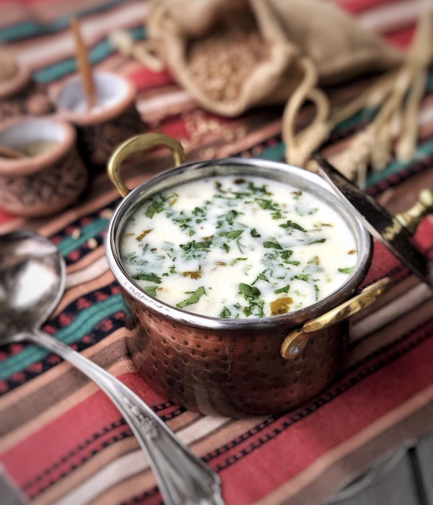

Spas

Description
A creamy yogurt soup made with wheat grains, herbs and sometimes chickpeas, served warm or cold.
Ingredients
- Yogurt (plain, unsweetened)
- Water or broth
- Wheat grains (Dzavar or pearl barley)
- Fresh herbs (parsley, dill, cilantro)
- Egg (optional, for thickening)
- Chickpeas (cooked)
- Garlic (minced)
Steps
- Cook Grains: Boil wheat grains until tender.
- Prepare Yogurt Base: Whisk yogurt with water or broth; heat gently, stirring constantly.
- Combine: Add cooked grains and seasonings; simmer briefly.
- Add Herbs: Stir in fresh herbs before serving.
- Serve: Enjoy warm or chilled.